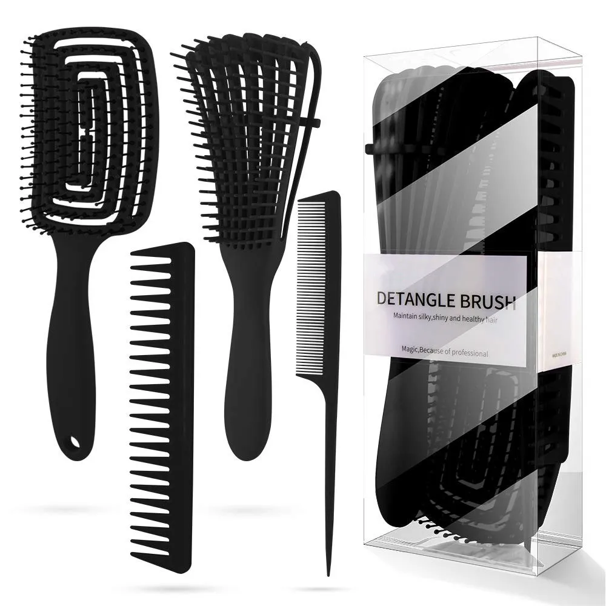
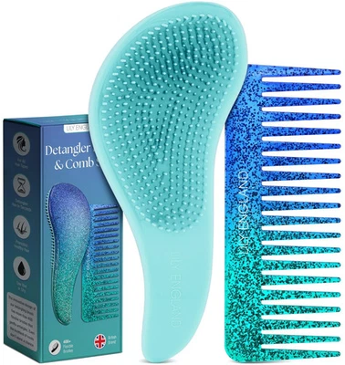
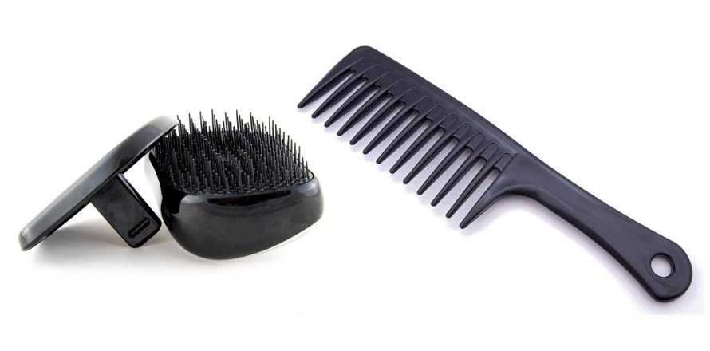

Tender-headed kids: gentle braid prep that stops the tears
By a KuuStore braider, Published November 14, 2026, Last reviewed November 14, 2026
Saturday morning in a Coral Springs living room. The comb comes out and your daughter is already sliding off the couch, not because braids hurt her last time, but because the combing did. She is tender-headed: her scalp feels pulling and tugging more strongly than most, so every snagged knot lands like a yank. Here is what years of braiding children teaches you. The braiding almost never causes the tears. The prep does, dry hair, a fine comb, big sections, and a hurry. Change the prep and the same child sits through a whole style with a tablet and a snack, unbothered.
The short answer: Never detangle a tender-headed child dry. Get the hair wet, load it with conditioner so it feels slippery, and work with your fingers first, in sections of four to six, from the ends upward. While you comb, hold each section at the roots with your other hand, so the pull never reaches the scalp. Part a little at a time, take real breaks every 15 to 20 minutes, and braid by grabbing hair, not pulling it. Gentle is not slower in the end, a calm child finishes faster than a crying one.
Step 1: wet hair and conditioner, the slip does the work
Detangling means working the knots and tangles out of hair so a comb can pass through it. Done dry, every knot is a tug-of-war the scalp loses. Done right, the water and conditioner do most of the work for you. Stylists call that help “slip”: hair coated in conditioner slides past itself, so strands glide out of a tangle instead of locking into it. Wet the hair fully, a spray bottle works if wash day was yesterday, then work conditioner through it until every strand feels slick. That slick feeling is the whole tool. If the hair feels grabby, add more water and more conditioner before you add more effort.

Step 2: fingers first, ends first, small sections
Split the hair into 4 to 6 sections and clip the ones you are not touching out of the way. In one section, start with your fingers: find the tangles by feel and tease them apart gently, the way you would untie a loose knot in a necklace. Only then bring in a wide-tooth comb (a comb with thick teeth set far apart, so it moves through textured hair without raking it). Start at the very ends, the bottom inch, and comb that smooth first. Then move up one inch and do it again. Working ends-up means every tangle is met while it is still small and low, far from the scalp, instead of being dragged down the whole strand and piled into one big knot at the bottom.
Step 3: the hand at the roots, why it stops the pain
This is the step that changes everything, so here it is twice. When you comb a section, grip that section firmly with your other hand, close to the scalp, and comb below your grip. The tug of the comb travels up the strand and stops at your hand, the way a wave stops at a wall. Your hand feels the pull. Her scalp never does.
Second picture, from a rope. Pull a rope from far away and the whole rope moves, end to end. Hold the rope tight near one end and tug the far side, only the part past your hand moves. Her hair is the rope, your grip is the hold, and her scalp is the end that stays still. Any time she flinches, your combing hand is not the problem to fix; your holding hand just needs to move closer to her head.

Step 4: parts in small passes, and a style sized for a child
Parting (drawing the lines that divide the hair into braid sections) hurts when one big sweep drags across tender skin. Part a little at a time: short, light strokes with the end of a rat-tail comb (the thin-handled comb used for parting), lifting hair away as you go instead of raking through it. Then choose the style with her head in mind: bigger parts mean fewer braids, less time in the chair, and less total pulling, and skip tight tension at the edges (the soft hairs at the hairline) entirely. A braid should sit secure, never strained. If she says a spot hurts after a braid goes in, that braid comes out and goes back in looser. Full stop.
Step 5: breaks are part of the appointment
Plan them instead of apologizing for them: a break every 15 to 20 minutes, water, a snack, two minutes of standing up and shaking it out. Give her a stop word that truly stops your hands, even mid-braid. A child who trusts that “stop” works stops bracing for pain, and a child who is not bracing feels less of it. Snacks, a show she picks, and sitting where she can see the mirror all help. So does honesty about the clock: “three more braids, then done” beats “almost finished” said four times.

When to hand the chair to a braider
Book a KuuStore braider if hair day has become a battle you both dread, if the tangles reach a level where you are tempted to cut knots out, or if her scalp is red, sore, or flaky in a way that does not settle, that needs a gentle in-person look before any style goes in. Our braiders look after your child at the shop, serving families across Miami-Dade, Broward, and Palm Beach, and they work the way this post reads: wet, conditioned, sectioned, and at your child’s pace, breaks included.